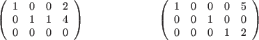
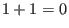
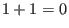
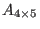
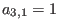
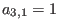
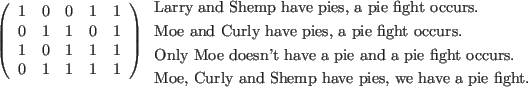
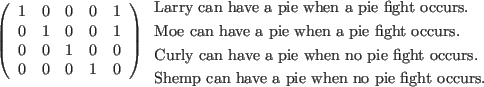

Next: Parameters Up: Row Operations Previous: Row Operations and Lamp Contents Index
Once we have a few examples these definitions will not seem so daunting.

Some examples of matrices that are not in reduced row echelon form are
![\begin{picture}(30,4)
\begin{minipage}[lb]{15em}
\begin{displaymath}\left(\begin...
... & 0 & 1 & 0 & 9
\end{array}\right)\end{displaymath}\end{minipage}\end{picture}](img494.gif)
We can see that the example on the left has a  in the column containing
a leading entry, so this violates condition 4. This matrix is, however,
in row echelon form. The example on the right
violates condition 2 as the leading entry in row 2 is further to the right
of the leading entry in row 3.
in the column containing
a leading entry, so this violates condition 4. This matrix is, however,
in row echelon form. The example on the right
violates condition 2 as the leading entry in row 2 is further to the right
of the leading entry in row 3.
Since a field always has a  and a 0
, we can see that the definition
of reduced row echelon form will apply to any matrices in any field. Let's look
at an example2.1 of a matrix in the binary field.
and a 0
, we can see that the definition
of reduced row echelon form will apply to any matrices in any field. Let's look
at an example2.1 of a matrix in the binary field.
Recall that the binary field consists solely of the numbers 0
and  and
obeys the same laws of addition and multiplication as do the integers except
that 
. We will use these scalars to represent logical values (true or false).
Let's say we have four characters, Larry, Moe, Curly and Shemp. They sometimes
get into pie fights. We know from past experience that pie fights broke out among the
four when we had the following conditions:
and
obeys the same laws of addition and multiplication as do the integers except
that 
. We will use these scalars to represent logical values (true or false).
Let's say we have four characters, Larry, Moe, Curly and Shemp. They sometimes
get into pie fights. We know from past experience that pie fights broke out among the
four when we had the following conditions:
We will create

with scalars  from the binary field. The columns
of the coefficients will refer to Larry, Moe, Curly and Shemp.
In other words, 
means that Larry (column 1)
has a pie in the third condition (row 3). The last column will
be used to indicate that a pie fight has started. The variables will indicate
whether or not a person threw a pie first.
from the binary field. The columns
of the coefficients will refer to Larry, Moe, Curly and Shemp.
In other words, 
means that Larry (column 1)
has a pie in the third condition (row 3). The last column will
be used to indicate that a pie fight has started. The variables will indicate
whether or not a person threw a pie first.

Now let's use the  and
and  compositions for the binary field to
put this matrix in reduced row echelon form. First we add row 1 to row 3 (we
use Operation 3 to first multiply row 1 by
compositions for the binary field to
put this matrix in reduced row echelon form. First we add row 1 to row 3 (we
use Operation 3 to first multiply row 1 by  and then add this row to row 3).
and then add this row to row 3).
Then we add row 2 to row 4
![\begin{picture}(34,4)
\begin{minipage}[lb]{10em}
\begin{displaymath}\left(\begi...
...an have a pie when no pie fight occurs.$\mathstrut$
\end{minipage}\end{picture}](img500.gif)
Our final two row operations would be to add row 3 to row 2 and
to add row 4 to row 1.

We can see from this that pie fights occur only when either Larry (and not Moe) or Moe (and not Larry) throw pies first. They are the instigators. If we want to avoid sticky messes, we only have to keep all pies from Larry and Moe or, possibly, make sure they both have pies.2.2
This is a trivial example of the use of binary numbers to answer a question in logic. Actually just this type of problem occurs in the design of circuits and networks (although the problems are enormously more complicated and involve solution techniques beyond linear algebra). It is possible for companies to save millions of dollars in production costs by identifying the minimum conditions necessary to obtain certain results.
In each step of the Gauss-Jordan elimination we come up with a new matrix. Although they are not the same we say that a matrix is row equivalent to another matrix if it is possible to produce one matrix from another using a finite number of row operations.
where
![\begin{picture}(30,4)
\begin{minipage}[rb]{10em}
\begin{displaymath}A=\left(\be...
...& 0
\end{array}\right)\end{displaymath}\smallskip
\end{minipage}\end{picture}](img509.gif)
There are three types of corn, of which three bundles of the first, two of the second, and one of the third make 39 measures. Two of the first, three of the second and one of the third make 34 measures. And one of the first, two of the second and three of the third make 26 measures. How many measures of corn are contained of one bundle of each type?